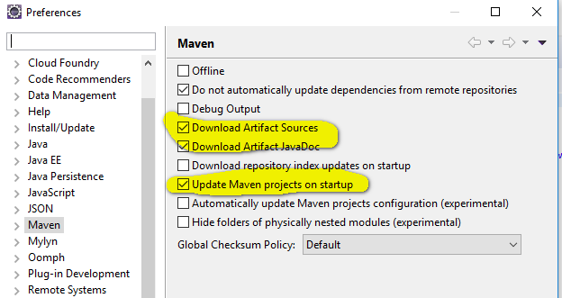
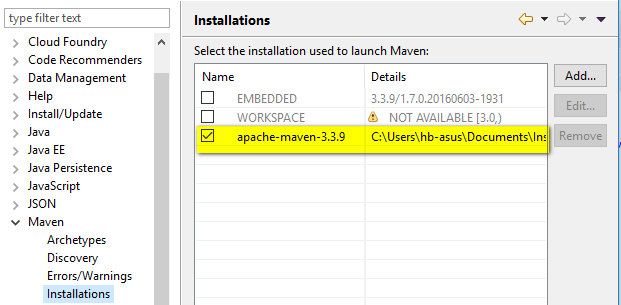

JPA Java Persistant API
--> persistance.xml : config qui utilise JPA , nous JPA puis spring par les repositories
ORM
Object Relational Mapping
Hibernate
1) Ajouter 3 dépendances dans pom.xml
1) "mysql connector" Ajout BDD -->
https://mvnrepository.com/artifact/mysql/mysql-connector-java
2) "spring data jpa" Recherche -->
3) "hibernate core" dernière version -->
4) Copier Hibernate core et modifier artifact en hibernate-entitymanager
<artifactId>hibernate-entitymanager</artifactId>
2) Sous /src/java/resources
===> Fichier de config JPA
3) Dans windows / preferences/ MAVEN


Pour chaque entité il faut un id.
Créé avec HelpNDoc Personal Edition: Nouvelles et informations sur les outils de logiciels de création d'aide